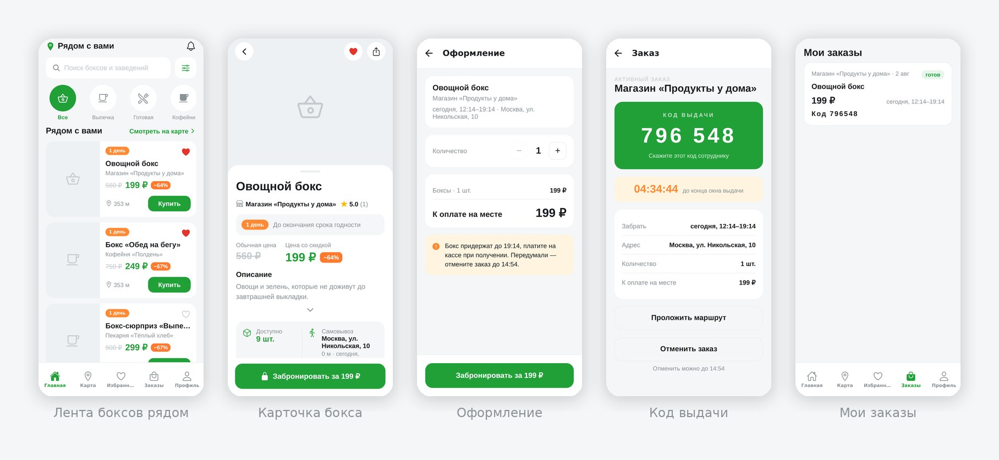
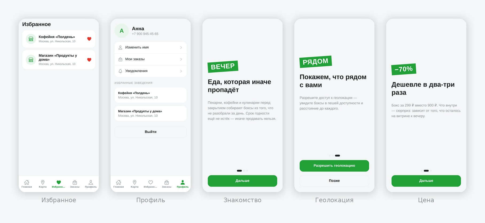
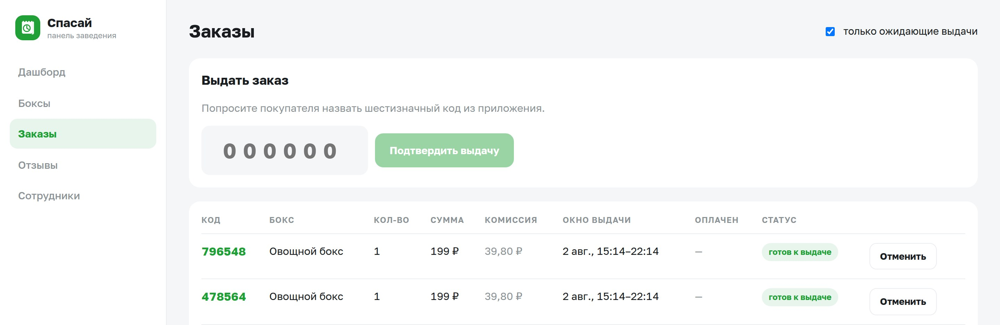

У пекарни к вечеру остаётся выпечка, у кулинарии — готовые блюда, у магазина — товар, до конца срока которого сутки. По полной цене это уже не продать, а деньги на него потрачены: мука куплена, повар отработал, аренда оплачена. Обычно всё это списывают.
Скидка на витрине помогает только с теми, кто и так зашёл. Нужно как-то сказать людям вокруг, что вот прямо сейчас у вас есть еда за треть цены. «Спасай» этим и занимается.
Доставки нет: покупатель приходит сам, в то время, которое назначило заведение. Поэтому нет ни курьеров, ни расходов на них, а у заведения не появляется новой работы — собрали бокс, выставили, отдали по коду.


Отдельного терминала нет — панель работает на том же компьютере или планшете, что стоит на кассе. Владелец добавляет сотрудников по одноразовым кодам: кассир видит заказы и выдаёт их, но не может менять цены и реквизиты.

| Что | Состояние | Комментарий |
|---|---|---|
| Приложение покупателя | работает | Android. Лента, поиск по расстоянию, карта, заказы, избранное, отмена. |
| Панель заведения | работает | Боксы, заказы, выдача по коду, отмена, отзывы, сотрудники. |
| Регистрация заведений | работает | Проверка ИНН и подсказка адреса с координатами, дальше ручная модерация. |
| Вход | работает | Через Яндекс ID — бесплатно и без SMS. Вход по SMS написан, включается ключами провайдера. |
| Онлайн-оплата | нужны ключи | ЮKassa подключена в коде, включается ключами магазина. Пока платят на кассе. |
| Пуш-уведомления | нужен доступ | Код готов, нужен сервисный аккаунт FCM. |
| Фотографии боксов | в работе | Хранилище поднято, загрузки из панели пока нет — вместо фото значок категории. |
| Версия для iPhone | нет | Приложение написано так, что собрать можно; нужен аккаунт разработчика Apple. |
Срок годности должен заканчиваться позже времени выдачи. Проверка стоит и в приложении, и в самой базе данных.
Остаток списывается с блокировкой строки. Двое, нажавшие «купить» на последний бокс одновременно, не получат его оба.
Оценку оставляет тот, чей заказ отмечен выданным. С пустых аккаунтов рейтинг не накрутить.
Заведение указывает обычную цену и цену бокса, процент считает система. «−90%» из воздуха не нарисовать.
Регистрация по ИНН со сверкой в реестре, дальше ручная модерация. Нарушителя администратор отключает одной кнопкой.
Тестовые данные технически не запускаются на боевом сервере. В базе только настоящие заведения и настоящие боксы.
Приложение бесплатное, сервисного сбора нет. Процент берётся с заведения — с денег, которых без приложения у него бы и не было.
Процент настраивается по каждому заведению отдельно. Сейчас деньги идут мимо платформы: покупатель платит на кассе. Принимать чужие платежи нельзя без агентского договора и кассы по 54-ФЗ, поэтому онлайн-оплата включится позже — код для неё уже написан, нужны только ключи и документы.